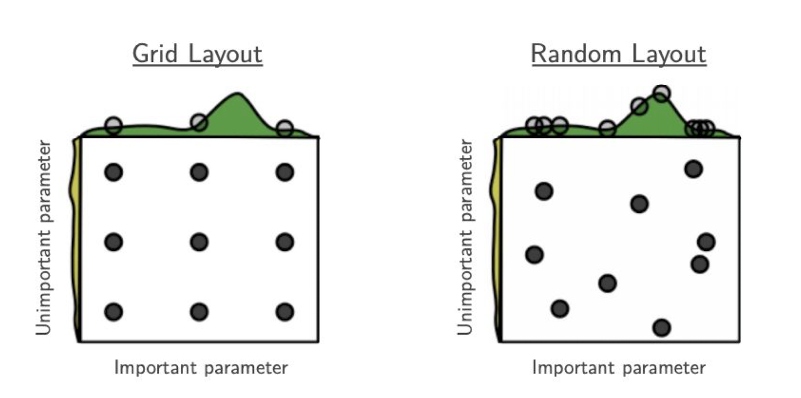

有监督学习
Contents
有监督学习¶
整体框架¶
最终输出：超参数设定➕模型➕模型表现
Development-test split、Hyperparameter tuning 、Optimal model training、Model evaluation、Model deployment
evaluation很重要：因为我们需要知道每个复杂度的模型对应的表现是多少，来判断有没有必要用复杂的模型！
因此：不可以用整个dataset出超参数而放弃evaluation
Data Preprocessing¶
Missing Data¶
不处理（当成一种值）——用对缺失值不敏感的树模型
LightGBM和XGBoost都是每次分割的时候，分别把缺失值放在左右两边各计算一次，然后比较两种情况的增益，择优录取
但注意这里我们假设了训练数据和预测数据的分布相同，比如缺失值的分布也相同
剔除
Drop column (typically used as baseline)：缺失太多的时候
Drop rows (if there are only a few with missing values)
填充（Impute）/估算(estimation)：
mean or median (SimpleImputer in sklearn API) 没有充分考虑数据中已有的信息，误差可能较大
kNN (neighbors are found using nan_euclidean_distance metric)
Regression models根据调查对象对其他问题的答案，通过变量之间的相关分析或逻辑推论进行估计。例如，某一产品的拥有情况可能与家庭收入有关，可以根据调查对象的家庭收入推算拥有这一产品的可能性
Add a binary additional indicator column (跟上一步一致)
(often captured by adding missing indicator columns)
Missing in not random! It will add value to the model
比如！有个class is always missing！就像16岁以下的这个组没有驾照年限,这个可以是predictive columns！！
Matrix factorization：将一个含缺失值的矩阵 X 分解为两个(或多个)矩阵,然后这些分解后的矩阵相乘就 可以得到原矩阵的近似 X
Categorical data¶
注意：都是对分开之后的数据！只针对train data 来fit
Ordinal encoding
Missing value可以理解为最不重要的class然后给0，也可以理解为最重要的给max！或者impute成mode
One-hot encoding: no information loss.
特点
处理缺失：missing的时候可以把missing当作一种category
测试集遇到新的类别的时候：加入
handle_unkown = "ignore"可以
场景：
One-hot encoding introduces multi-collinearity
For e.g., x3 = 1 - x1 - x2 (in case when we have three categories)
Possible to remove one feature, because it’s a linear combination of the other columns, could be problematic for some non-regularized regression models
Has implications on model interpretation
可以drop这个也可以drop别的，这样的话feature importance就不同了
有人可以keep all columns, and apply regulariazation to take care of during the training process, then get insights into the model
有的模型 比如trees，可以split on categorical variables, so it will automatically handles categorical variables：
Tree-based models
Naive Bayes models
问题：Leads to high-dimensional datasets
Target encoding：不是introduce 1 column for 1 category, 而是summarize the information for each category and convert into 1 column
Generally applicable for high cardinality categorical features
具体encode的方式取决于模型问题：
Regression: Average target value for each categoryClassification: Average of 概率——这个比直接map到label好，因为依然可以根据probability区分出不同的class对y的影响Binary classification: Probability of being in class 1Multiclass classification: One feature per class that gives the probability distribution
Numerical Feature Scaling¶
scaling不会改变原始数据，但是会让模型变得好
记得要fit_transform(训练集)，然后transform(测试集)而不是fit_transform(测试集)，因为我们不知道测试集的mean和std等
-20220724215537886.(null))
具体的方式：
标准化：最大最小标准化、z标准化——StandardScaler()、MinMaxScaler()、MaxAbsScaler()（除以最大值的话负数还会是负数）、RobustScaler()、Nomalizer()（变成圆形）
归一化：对于文本或评分特征，不同样本之间可能有整体上的差异，如a文本共20个词，b文本30000个词，b文本中各个维度上的频次都很可能远远高于a文本
注意应该做fit的数据集跟应该做fit的模型是一致的
比如hyper parameter tuning的时候 scaler不应该碰validation data
-20220724215547062.(null))
Outliers¶
检测方式：
基于业务理解：
超过阈值的脏数据｜比如身高超过2米5；年龄超过150···
基于邻近度的技术：通常可以在对象之间定义邻近性度量，异常对象是那些远离其他对象的对象
箱线图：Q1 Q3再离开1.5个IQR(interquartile range Q1~Q3)
均值离开3个标准差
聚类分析：计算簇内每个点对于簇中心的相对距离，找到距离大的
建立一个数据模型，异常是那些同模型不能完美拟合的对象
LR之后看cook距离
基于密度的技术：仅当一个点的局部密度显著低于它的大部分近邻时才将其分类为离群点
局部离群点因子检测：局部离群点因子是一种识别基于密度的局部离群点的算法。使用局部离群因子, 将一个点的局部密度与 其他邻域进行比较。如果前者远小于后者 ( LOF \(>1\) ), 那么改点相对于其他邻域在一个密度较为稀疏的位置, 即视为离群点。LOF 的局限性在于只适合用于数值型数据。
其使用的函数为
lofactor(), 所在的包为 DMwR 和 dprep。
处理方式：
判定为缺失，然后走缺失的处理方式
不处理
Winsorizing： limiting extreme values in the statistical data to reduce the effect of possibly spurious outliers
from scipy.stats.mstats import winsorize winsorize([92, 19, 101, 58, 1053, 91, 26, 78, 10, 13, -40, 101, 86, 85, 15, 89, 89, 28, -5, 41], limits=[0.05, 0.05])
处理样本不平衡¶
Change data
Random Undersampling
Random Oversampling
Ensemble Resampling
A random re-sample of majority class is used for training each instance in an ensemble
The minority class is retained while training the instance.
Synthetic Minority Oversampling Technique (SMOTE)
Synthetic Minority Oversampling Technique (SMOTE) is a popular method to handle training with imbalanced datasets
SMOTE adds synthetic interpolated samples to minority class
The following procedure is repeated for every original data point in minority class:
Pick a neighbor from \(k\) nearest neighbors
Sample a point randomly from the line joining the two data points.
Add the point to the minority class
Leads to large datasets (due to oversampling)
Change training procedure
assighing Class weights：make sure the penalty of predicting minority wrong is more high!
Reweight each sample during training
Modify the loss function to account for class weights
Similar effect as oversampling (except that this is not random)
修改模型的损失函数：不是F1了而是更不同的
重新选择评价指标：
AP
重构问题
仔细对你的问题进行分析与挖掘，是否可以将你的问题划分成多个更小的问题，而这些小问题更容易解决。
模型训练步骤¶
Development-test split¶
Random split
比例取决于实际问题
Large Sample Size：两边都够 随便
训练集小的 比如只有100个的时候可能需要put aside少一点
有时候太多了，只需要训练50%的数据就够了来节省时间，后面拿50%去测试，training procures is shorten without comprimising the quality of model
最后输出各个target的不一定是占比一样的
Stratified Splitting
The stratified splitting ensures that the ratio of classes in development and test datasets equals that of the original dataset.
Generally employed when performing classification tasks on highly imbalanced datasets
index是class
是SK learn的默认值！
Structured Splitting
The structured splitting is generally employed to prevent data leakage.
Examples：Stock price predictions、Time-series predictions
-20220724221513024.(null))
Hyper-parameter tuning¶
核心目标：Training data ⇒ Select Best Parameters
-20220724221503960.(null))
参数和超参数的区别：parameter是learn from data的 hyperparameter是你定的
也可以让数据出hyperparameter，但这样的话就optimization problem会变得复杂，而不是一个简单的可以solve的convex optimization，所以我们会fix它
Bias-Variance¶
超参的注意事项——注意复杂度
对模型复杂度的理解：对模型变复杂，我们在做Bias-Variance的Tradeoff.模型的预测误差可以分解为三个部分: 偏差(bias)， 方差(variance) 和噪声(noise).
the conflict in trying to simultaneously minimize these two sources of error that prevent supervised learning algorithms from generalizing beyond their training set
The bias error is an error from erroneous assumptions in the learning algorithm. High bias can cause an algorithm to miss the relevant relations between features and target outputs (underfitting). 偏差度量了模型的期望预测与真实结果的偏离程度， 即刻画了学习算法本身的拟合能力。偏差则表现为在特定分布上的适应能力，偏差越大越偏离真实值。
The variance is an error from sensitivity to small fluctuations in the training set. High variance may result from an algorithm modeling the random noise in the training data (overfitting). 方差度量了同样大小的训练集的变动所导致的学习性能的变化， 即刻画了数据扰动所造成的影响。方差越大，说明数据分布越分散
噪声：噪声表达了在当前任务上任何模型所能达到的期望泛化误差的下界， 即刻画了学习问题本身的难度 。
我们想要左上角：都很准确
-20220724221505235.(null))
欠拟和问题¶
underfitting是low variance high bias：没有variance但都预测出偏差了
当算法从数据集学习真实信号的灵活性有限时，就会出现偏差。( 想的太过简单，欠拟合), 所以模型整体产生偏差。
欠拟合指的是模型没有很好地学习到数据特征，不能够很好地拟合数据，在训练数据和未知数据上表现都很差。
欠拟合的原因在于：
特征量过少；
模型复杂度过低
过拟合问题¶
解决：
增加新特征，可以考虑加入进特征组合、高次特征，来增大假设空间；
添加多项式特征，这个在机器学习算法里面用的很普遍，例如将线性模型通过添加二次项或者三次项使模型泛化能力更强；
减少正则化参数，正则化的目的是用来防止过拟合的，但是模型出现了欠拟合，则需要减少正则化参数；
使用非线性模型，比如核SVM 、决策树、深度学习等模型；
调整模型的容量(capacity)，通俗地，模型的容量是指其拟合各种函数的能力；
容量低的模型可能很难拟合训练集。
overfitting是high variance low bias：平均来看的话 是center the plot means doing well! 但variance非常高
太关注训练集中个体波动，过拟合
高方差模型，对特定训练数据集的灵活性极高。
高方差模型非常关注训练数据，而对以前没有见过的数据不进行泛化generalizability。因此，这样的模型在训练数据上表现得很好，但在测试数据上却有很高的错误率。
过拟合的原因在于：
参数太多，模型复杂度过高；
建模样本选取有误，导致选取的样本数据不足以代表预定的分类规则；
样本噪音干扰过大，使得机器将部分噪音认为是特征从而扰乱了预设的分类规则；
假设的模型无法合理存在，或者说是假设成立的条件实际并不成立。
怎么解决过拟合（重点）🌟🌟🌟
获取和使用更多的数据（数据集增强）——解决过拟合的根本性方法
特征降维:人工选择保留特征的方法对特征进行降维
加入正则化，控制模型的复杂度
为什么参数越小代表模型越简单？
因为参数的稀疏，在一定程度上实现了特征的选择。
越复杂的模型，越是会尝试对所有的样本进行拟合，甚至包括一些异常样本点，这就容易造成在较小的区间里预测值产生较大的波动，这种较大的波动也反映了在这个区间里的导数很大，而只有较大的参数值才能产生较大的导数。因此复杂的模型，其参数值会比较大。 因此参数越少代表模型越简单
Dropout
Early stopping
交叉验证
增加噪声
超参数搜索方法¶
Grid: there are really three distinct values of one parameter and three distinct values of another parameter, so there are only 3 x 3, 6 different values tried.
Random: probably there are nine different values, and in this case there are nine different values. when you actually doing random search, you’re actually trying different values more than the search itself, which has a finite set of values
好处：对dominating的parameter可以尝试更多的值
Bayesian optimization：given search, figure out the best next point to search
Bayesian optimization works by constructing a probability distribution of possible functions (gaussian process) that best describe the function you want to optimize.
Gaussian process把所有搜索过的点拟合成一个函数
A utility function helps explore the parameter space by trading between exploration and exploitation.
The probability distribution of functions is updated (bayesian) based on observations so far.
区别：不是pre determined的，然后grid 和random不需要使用我们输入的结果
两者结合——Evolutionary optimization
超参选择方法（model selection）：对每个超参strategy，我们需要知道这个超参数表现怎么样
如果使用test data的话，会导致overfitting，所以我们使用一个validation dataset来衡量effectiveness of a hyperparameter value，从而实现model selection！
Three-way holdout：跟之前的split testset的方法一样do another split，可以random stratified之类的
效果：give reasonable approximation of test performance on large balanced datasets
K-fold cross validation (CV)： 数据分成k份，执行k次（k-1份当模型 剩一份评估）⇒平均表现
Leave-one-out CV：k = n，所有的样本都单独被拿走一次
High variance 适用于小数据！
Repeated stratified K-fold CV：K-fold的基础上 每次development data is shuffled before creating the training & validation datasets
Stratified K-fold CV
Stratified sampling is used when working with highly imbalanced datasets ！
Random permutation CV：generate a user defined number of independent train / test dataset splits. Samples are first shuffled and then split into a pair of train and test sets.
所以会是乱的！
Optimal model training, model evaluation¶
Development data = Training data + validation data ⇒ Model to evaluate
The purpose of test dataset is to evaluate the performance of the final optimal model
Model evaluation is supposed to give a pulse on how the model would perform in the wild. (测试集的表现是为了衡量在unseen data 的表现！测试集相当于是一个proxy)
这就是为什么在training process我们完全不touch test set
-20220724222627619.(null))
KNN¶
A simple non-parametric supervised learning method： Assigns the value of the nearest neighbor(s) to the unseen data point
Prediction is computationally expensive, while training is trivial
Generally performs poorly at high dimensions
计算这个点跟所有点的距离
K = 1的时候 ，用离他最近的一个的label来预测
线性回归类¶
Simple Linear Regression¶
Assumptions
Linearity: Y are linearly dependent on each X variable. ( a linear (technically affine) function of x)
Independence: Observations are independent to each other. the x’s are independently drawn, and not dependent on each other.
反例：用2天前股价、3天前股价预测今天的
Homoscedasticity：the ϵ’s, and thus the y’s, have constant variance.——残差 distributed arround 0
Normality：残差正态the ϵ’s are drawn from a Normal distribution (i.e. Normally-distributed errors)
公式
-20220724222758272.(null))
问题：有highly-correlated variables的时候，coefficient可能会flip
改进
outlier很多的时候可以考虑log transformation on Y
Ridge Regression¶
注意是L2正则化$\(\operatorname{Min}_{w} \sum_{i=1}^{m}\left(\hat{y}_{i}-y_{i}\right)^{2}+\alpha\|w\|_{2}^{2} \)$
解出来是在里面多了一个$\(\alpha I\)\(：\)\(\boldsymbol{w}=(X^{T} X+\alpha I )^{-1} X^{T} y\)$
α越大，会越push $\(\boldsymbol{w}\)$ to 0
Lasso Regression¶
公式：
-20220724222758325.(null))
跟Ridge的区别：
Firstly hit one of the corner 4 points and 1 coefficient become 0 in lasso!
n维度的时候就会hit one of the colomn!
Ridge的时候有可能是0但大部分不是：https://stats.stackexchange.com/questions/176599/why-will-ridge-regression-not-shrink-some-coefficients-to-zero-like-lasso
-20220724222758875.(null))
-20220724222759130.(null))
Logistic Regression¶
模型Setup¶
Loss Function
Hinge loss和log loss相比0-1 loss可以求导，这两个都是upper bond of the loss function（黑色那个）
假设 y = 1
0-1 loss：需要 w.T @ x + b >0 才会是0**Hinge loss：如果你预测-4 正确为1，那就是1-(1 * (-4)) = 5｜如果预测4正确为1，loss是1-1×4 = -3 然后再max(0, -3) = 0总之正确的时候预测概率越接近1，loss越接近0，然后越离谱的话给的Hinge就会给越高的loss，而不是0-1那样fixed住
Logistic Loss: 见下方
具体公式：
推导过程：
首先这是一种广义线性模型：把y=1的概率p用$\(log(\frac{p}{1-p})\)\(的联系函数跟系统部分\)\(w^Tx + b\)$给联系在了一起，这个function会推导出sigmoid：
接着我们用最大似然估计来optimize想要求：$\(p(y=1 \mid x)=\frac{1}{1+\exp \left(-\left(w^{T} x+b\right)\right)}\)$
然后就得到了Log Likelihood
于是我们把损失函数设定成Min(-LL)
再加入正则项就得到了一系列：Loss function for regularized logistics regression：
SK learn里面是C，高的$\(C = \frac{1}{\alpha}\)$相当于没有对参数限制见效
多分类问题常规解决方案¶
叠加binary
OVR (One vs Rest)
-20220724223459288.(null))
OVO (One vs One)
建好几个binary classification，如果大多数model说你是class X就是那个
对比
比如三条线中间的地方，一人说你是一个class，是uncertainty
Logistics解决多分类问题¶
直接extend
因此可能会比用ovo和ovr的SVM要好！因为他直接globally optimize all the log odds of ratio. It actually solves it as a multiclass classification problem!
SVM¶
Hard/soft magin含义：
-20220724224339951.(null))
Primal + Hard-margin¶
**Objective function的含义：**optimize 划分超平面的 maximum margin （最大间隔）=$\(\frac{2}{\|w\|_{2}^{2}}\)\(，也就是minimize\)\(\frac{\|w\|_{2}^{2}}{2}\)$
限制条件的含义：
点(xi, yi)到直线$\(y=w^{T} x+b\)\(的距离\)\(\frac{ |w^{T} x_{i}+b-yi|}{{\|w\|_{2}^{2}}} \geq 1\)$
\[\Rightarrow { |w^{T} x_{i}+b-yi|} \geq {{\|w\|_{2}^{2}}}\]\[\Rightarrow w^{T} x_{i}+b \geq y_i \text{ or } w^{T} x_{i}+b \leq -y_i\]\[\begin{split}\Rightarrow \begin{cases}\omega^{T} x_{i}+b \geq+1, & y_{i}=+1 \\ \omega^{T} x_{i}+b \leq-1, & y_{i}=-1\end{cases}\end{split}\]\[\Rightarrow y_{i}\left(w^{T} x_{i}+b\right) \geq 1\]他之上那么要>1，如果在它之下要>-1，也就是*y1 > 1
Primal + Dual¶
-20220724224339721.(null))
**Link：**通过对w和b求导 把结果代回loss function就得到了对偶问题
特点：之前需要解w和b、现在只需要解α
α 一个m维向量（m是样本的size，n是变量个数）
之前解的是一个n_feature维问题！现在变成n_sample维问题
如果少量feature的时候 Primal问题解的更快（大多数情况）
如果有大量feature的话，Dual解的更快
目的
dual可以更容易移动到non- linear的场景里
效果：这个等式会一直是0 \(\alpha_{i}\left(1-y_{i}\left(w^{T} x_{i}+b\right)\right)=0\)
对于非支持向量：αi=0
只有解出来的支持向量满足：αi != 0,$\(y_{i}\left(w^{T} x_{i}+b\right) = 1\)$
Primal + Soft- margin¶
首先ξ introduce loss，然后再通过数学变换把ξ解出来，然后得到的就是Hinge loss
-20220724224337896.(null))
C的作用：控制error的重要性——C越大，margin越不重要就越小｜C越小，margin越重要就越大
Dual + Soft-margin¶
-20220724224337040.(null))
也可以加入正则化：
预测的方法：$\(\operatorname{sign}\left(\sum_{i} \alpha_{i} y_{i}\left(x \cdot x_{i}\right)+b\right)\)$
- \[ \begin{align}\begin{aligned}\alpha_i$$：第i个support vector的dual coefficient - $$x_i, y_i$$：第i个support vector的坐标\\#### Kernel Function\\**Kernel function 𝕂(𝒙;𝒙)** 可以 **estimates inner product between two points in the projected space.**\\- 假设有一个magic function 𝝓(𝒙)，可以 projects data to **high-dimensional space**\\ 还是给两个点返回距离！但是这个距离是在高维空间上的 所以可能在这个维上看到的不一样\\<img src="../images/(null)-20220724224338320.(null)" alt="img" style="width:50%;" />\\- 但我们关心的是两个𝝓(𝒙i) × 𝝓(𝒙j) 的结果，而不是𝝓本身，所以可以使用一个Kernel trick，假设**𝕂**是直接作用在dot product上面的，从而只需要assume 𝝓的存在就可以了\\<img src="../images/(null)-20220724224337915.(null)" alt="img" style="width:50%;" />\\- 因此这个问题就变成了：\\<img src="../images/(null)-20220724224338928.(null)" alt="img" style="width:50%;" />\\- 类型：\\<img src="../images/(null)-20220724224338479.(null)" alt="img" style="width:50%;" />\\- Linear Kernel：没做啥！ - Polynomial： - 比如一个一维映射到三维的函数$$\phi\left(x\right)=\left(x, \sqrt{2} x, 1\right)$$，他的效果是$$\phi\left(x_{i}\right) \cdot \phi\left(x_{j}\right)=\left(x_{i}, \sqrt{2} x_{i}, 1\right) \cdot \left(x_{j}, \sqrt{2} x_{j}, 1\right) = \left(x_{i} x_{j}+1\right)^{2}\end{aligned}\end{align} \]
他其实等价于一个Polynomial的Kernel Function$\(\mathbb{K}\left(x_{i}, x_{j}\right)=\left(x_{i} x_{j}+1\right)^{2}\)$就可以给出高维空间φ下的点乘结果了
计算复杂度也低多了！
RBF(Radial Basis Function) Kernel：如果充分tune γ enough，背后实际上是一个infinite diminutional的space，从而always可以separate data！可以perfectly separate data.
RBD主要用于线性不可分的情形
两个点在高维空间越接近，就会有越高的values｜Spread out 的点会smaller
γ会控制 how the function value decays with distance（γ越大的话，距离越远的sample 值下降得越快）e.g
Kernel选择的思路：
（1）如果特征维数很高，往往线性可分（SVM解决非线性分类问题的思路就是将样本映射到更高维的特征空间中），可以采用LR或者线性核的SVM；
（2）如果样本数量很多，由于求解最优化问题的时候，目标函数涉及两两样本计算内积，使用高斯核明显计算量会大于线性核，所以手动添加一些特征，使得线性可分，然后可以用LR或者线性核的SVM；
（3）如果不满足上述两点，即特征维数少，样本数量正常，可以使用高斯核的SVM。
Ensemble Methods¶
Bagging和Boosting都是ensemble，就是把弱分类器组装成强分类器的方法
Motivation
The decision trees are highly unstable and can structurally change with slight variation in input data
Decision trees perform poorly on continuous outcomes (regression) due to limited model capacity.
定义
Several weak/simple learners are combined to make the final prediction
目的：Generally ensemble methods aim to reduce model variance
Like have multiple such outputs and then you take an average of that.
效果：Ensemble methods improve performance especially if the individual learners are not correlated.
took a different or a different perspective of the data itself.
采样会⇒成功
if you had one or two highly dominant features that probably is saying is highly correlated to your outcome.
Suppose every tree that a building has access to that feature. Probably every tree is going to look very similar right now.
Assume that you actually had some trees not have access to that feature. Then they’ll start looking at the data from a different perspective and they’ll probably build trees that are giving you another notion of your data center. And it’s not dominated by these one or two features that are are highly correlated to the outcome.
类型：Depending on training sample construction and output aggregation, there are two categories:
Bagging (Bootstrap aggregation)
Boosting
Bagging¶
Bagging的主要目的是减少方差
多次采样，训练多个分类器Several training samples (of same size) are created by sampling the dataset with replacement
从原始样本集中抽取训练集。每轮从原始样本集中使用Bootstraping的方法抽取n个训练样本（在训练集中，有些样本可能被多次抽取到，而有些样本可能一次都没有被抽中）。共进行k轮抽取，得到k个训练集。（k个训练集之间是相互独立的）
there could be samples that are repeated and there are samples that do not get picked at all.
每次使用一个训练集得到一个模型，k个训练集共得到k个模型。（注：这里并没有具体的分类算法或回归方法，我们可以根据具体问题采用不同的分类或回归方法，如决策树、感知器等）
分类问题：对分类问题：将上步得到的k个模型采用投票的方式得到分类结果
对回归问题，计算上述模型的均值作为最后的结果。（所有模型的重要性相同）
-20220725100730752.(null))
Boosting¶
Boosting的目的主要是减少偏差
Includes a family of ML algorithms that convert weak learners to strong ones.
The weak learners are learned sequentially with early learners fitting simple models to the data and then analysing data for errors.
When an input is misclassified by one tree, its output is adjusted so that next tree is more likely to learn it correctly.
每个tree的目标是do better on the misclassify samples of the previous.
之前分对的down weight
之前分错的out weight
最后 combined by a weighted average of each of those trees. 但这个权重跟模型有关！
Random Forest是直接average！
算法流程：
给定初始训练数据，由此训练出第一个基学习器；
根据基学习器的表现对样本进行调整，在之前学习器做错的样本上投入更多关注；
用调整后的样本，训练下一个基学习器；
重复上述过程T次，将T个学习器加权结合。
通过提高那些在前一轮被弱分类器分错样例的权值，减小前一轮分对样例的权值，来使得分类器对误分的数据有较好的效果。
通过什么方式来组合弱分类器？
通过加法模型将弱分类器进行线性组合，比如AdaBoost通过加权多数表决的方式，即增大错误率小的分类器的权值，同时减小错误率较大的分类器的权值。
而提升树通过拟合残差的方式逐步减小残差，将每一步生成的模型叠加得到最终模型。
Bagging和Boosting的区别¶
1）样本选择上：
Bagging：训练集是在原始集中有放回选取的，从原始集中选出的各轮训练集之间是独立的。
Boosting：每一轮的训练集不变，只是训练集中每个样例在分类器中的权重发生变化。而权值是根据上一轮的分类结果进行调整。
2）样例权重：
Bagging：使用均匀取样，每个样例的权重相等
Boosting：根据错误率不断调整样例的权值，错误率越大则权重越大。
3）预测函数：
Bagging：所有预测函数的权重相等。
Boosting：每个弱分类器都有相应的权重，对于分类误差小的分类器会有更大的权重。
4）并行计算：
Bagging：各个预测函数可以并行生成
Boosting：各个预测函数只能顺序生成，因为后一个模型参数需要前一轮模型的结果。
Stacking¶
多次采样，训练多个分类器，将输出作为最后的输入特征
将训练好的所有基模型对训练集进行预测，第个\(i\)基模型对第\(i\)个训练样本的预测值将作为新的训练集中第\(i\)个样本的第\(i\)个特征值，最后基于新的训练集进行训练。同理，预测的过程也要先经过所有基模型的预测形成新的测试集，最后再对测试集进行预测。
stacking常见的使用方式：
由k-NN、随机森林和朴素贝叶斯基础分类器组成，它的预测结果由作为元分类器的逻回归组合。
Trees¶
Decision Trees¶
特点
Greedy algorithm
Applicable to both classification & regression problems
Regression的话只能是finite的数值
Easy to interpret & deploy：可以让别人handwrite
Non-linear decision boundary
tree相当于是在高维空间的好几个维度上去splitting up the space
Minimal preprocessing
missing 和 categorical可以handle！
Invariant to scale of data
Invariant to the scale of the data because it is it is not really looking at at absolute values of the of the features. More on the ranges of the features.
Framework
-20220724230711222.(null))
Loss
分类任务：
Impurity衡量：\(Entropy(node)=-\sum_{i=1}^{K} p_{i} \log _{2} p_{i} \) ｜ \(Gini Index(node)=1-\sum_{i=1}^{K} p_{i}^{2}\)$
- \[p_{i}=\text{probability of beloing to a class} =\frac{\text{number of samples of the class}}{\text{total number of samples in that node}}\]
例子
两者区别不大——gini的最大值是1，entropy的最大值是0.5
Information Gain（评估信息增益Information Gain对确定的feature和确定的split threshold）
Expected information gain $\(IG(T, a)=H(T)-H(T \mid a)\)$ is the reduction in information entropy Η from a prior state to a state that takes some information as given. 也就是不纯度的下降
- \[ \begin{align}\begin{aligned}H(T)$$：a priori Shannon entropy - $$H(T\mid a) = \sum_{v \in vals(a)} \frac{\left|S_{a}(v)\right|}{|T|} H\left(S_{a}(v)\right)$$：样本占比为权的加权平均entropy - $$\frac{\left|S_{a}(v)\right|}{|T|} $$: 其实分到a的占比（权重），拿这个去加权平均 - $$S_{a}(v)=\left\{x \in T \mid x_{a}=v\right\}$$表示T中分裂到a里面的node组成的集合 - $$H\left(S_{a}(v)\right)$$：$$S_{a}(v)$$的Entropy - e.g\\ <img src="../images/(null)-20220724231640012.(null)" alt="img" style="width:33%;" />\\ - Numerical的： An exhaustive **search across all features and values** to find the (feature, threshold) combination with the highest information gain (IG).\\ <img src="../images/(null)-20220724231943423.(null)" alt="img" style="width:50%;" />\\ - Categorical的：\\ - An exhaustive **search across all categorical features** and their categories to find the(feature, subsets) combination with the highest information gain (IG).\\ <img src="../images/(null)-20220724231943637.(null)" alt="img" style="width:50%;" />\\ - Use **target encoding** to reduce time complexity by only evaluating O(L) splits of the ordered categories.\\ - 首先：The categories are ordered by mean response rate \\ - 接着按顺序一个一个include feature\\ - 这样找出来的会是optimal的！\\ <img src="../images/(null)-20220724231943028.(null)" alt="img" style="width:50%;" />\\#### 决策树Overfitting的解决\\> 不训练到完整的tree\\- `Pruning`：start from the bottom and start chopping off parts of the tree that don't make sense. - Reduced error - Starting at the leaves, each node is replaced with its most popular class (chopping) - If the validation metric is not negatively affected, then the change is kept, else it is reverted. - Reduced error pruning has the advantage of speed and simplicity. - Cost complexity - The node with the least $$\alpha_{eff}=\frac{R(t)-R_{\alpha}\left(T_{t}\right)}{T-1}$$is pruned - α相当于一个正则项的系数，从而$$R_{\alpha}(T)=R(T)+\alpha|T|\end{aligned}\end{align} \]
- \[ \begin{align}\begin{aligned}R\left(T_{t}\right)=\sum_{i \in \text { leaf nodes }} R(i)$$, sum of impurities for all leaf nodes t of a tree rooted at node t. - α越高，惩罚越大，会从overfitting -> sweetspot -> underfitting. 随着alpha提高，总impurity会有steep change\\<img src="../images/(null)-20220724230711183.(null)" alt="img" style="width:40%;" /><img src="../images/(null)-20220724230711425.(null)" alt="img" style="width:40%;" />\\- `Early stopping`：build up to a point and then you stop.\\ - Maximum depth：only build it to a certain depth which prevents you from going very deep. - 比如用DFS，那就是往下split直到变成pure node or reach max_depth - Maximum leaf nodes：only have a certain number of leaf nodes - Minimum samples split：there are a minimum number of samples before I consider it a split - Minimum impurity decrease \\#### Feature Importance\\probability of sample reaching that node： the (normalized) total reduction of the criterion brought by that feature\\### Random Forests\\随机一种基于树模型的Bagging的优化版本，一棵树的生成肯定还是不如多棵树，因此就有了随机森林，解决决策树泛化能力弱的特点。\\- 多次随机取样，多次随机取属性，选取最优分割点，构建多个(CART)分类器，投票表决\\- 算法流程：\\ - 输入为样本集$D={(x，y_1)，(x_2，y_2) \dots (x_m，y_m)}$，弱分类器迭代次数$T$。\\ - 输出为最终的强分类器$f(x)$\\ - 对于$t=1，2 \dots T$\\ - 对训练集进行第$t$次随机采样，共采集$m$次，得到包含$m$个样本的采样集Dt\\ - 用采样集$D_t$训练第$t$个决策树模型$G_t(x)$，在训练决策树模型的节点的时候，在节点上所有的样本特征中选择一部分样本特征，在这些随机选择的部分样本特征中选择一个最优的特征来做决策树的左右子树划分\\ - 如果是分类算法预测，则$T$个弱学习器投出最多票数的类别或者类别之一为最终类别\\ 如果是回归算法，$T$个弱学习器得到的回归结果进行算术平均得到的值为最终的模型输出。\\- 随机森林为什么不容易过拟合？\\ - 随机森林中的每一颗树都是过拟合的，拟合到非常小的细节上 - 随机森林通过引入随机性，使每一颗树拟合的细节不同\\ - 所有树组合在一起，过拟合的部分就会自动被消除掉。\\**算法**：\\<img src="../images/(null)-20220725101113336.(null)" alt="img" style="width:50%;" />\\- Applicable to both classification and regression problems - Smarter bagging for trees - Motivated by theory that generalization **improves with uncorrelated trees** - Bootstrapped samples and random subset of features are used to train each tree - sample rows and columns, 每个去train decision tree - highly dominate 的变量 RF 会去debiased features - The outputs from each of the models are averaged to make the final prediction.\\超**参数**：\\- Random Forest hyperparameters: - \# of trees - \# of features - Classification - sqrt(# of features) 是 general guideline - Regression - # of features，一般不sample feature - Decision Tree hyperparameters (splitting criteria, maximum depth, etc. ) \\**RandomForest不需要CV的原因**\\- 每次训练的时候 都只看了bootstrap sample，有一部分的数据是没有touch的 - Uses `out-of-bag (OOB)` error for model selection - OOB error is the **average error of** **a data point** calculated using predictions from the trees that do not contain it in their respective bootstrap sample - 每个data point 的 error = 样本外预测的error的平均 - 如果有一个sample去了所有的tree，那么它就不会加入out-of-bag的计算 - 如果有一个sample只去了一个tree，那么这个tree的error就是这个data point的oob error - If I built 100 trees and 99 trees used 1 sample and one tree did not use that sample, then that one tree will make a prediction on this, and you can calculate the error from that.\\ **Feature Importances**\\- RF有两种方法：\\ - 通过计算Gini系数的减少量VIm=GI−(GIL+GIR)判断特征重要性，越大越重要。\\ - 对于一颗树，先使用袋外错误率(OOB)样本计算测试误差a，再随机打乱OOB样本中第i个特征（上下打乱特征矩阵第i列的顺序）后计算测试误差b，a与b差距越大特征i越重要。\\ - 袋外数据(OOB)： 大约有1/3的训练实例没有参与第k棵树的生成，它们称为第$k$棵树的袋外数据样本。\\ - 在随机森林中某个特征$X$的重要性的计算方法如下：\\ - 对于随机森林中的每一颗决策树，使用相应的OOB(袋外数据)来计算它的袋外数据误差，记为$err_{OOB1}$。\\ - 随机地对袋外数据OOB所有样本的特征$X$加入噪声干扰(就可以随机的改变样本在特征X处的值)，再次计算它的袋外数据误差，记为$err_{OOB2}$。\\ - 假设随机森林中有$N$棵树，那么对于特征$X$的重要性为$(err_{OOB2}-err_{OOB1}/N)$，之所以可以用这个表达式来作为相应特征的重要性的度量值是因为：若给某个特征随机加入噪声之后，袋外的准确率大幅度降低，则说明这个特征对于样本的分类结果影响很大，也就是说它的重要程度比较高。\\- Feature importance is calculated as the **decrease in node impurity** weighted by the *probability of samples in node*s that are reaching that node. - The node probability can be calculated by the **number of samples that reach the node**, divided by the total number of samples. - 有时候会选少的number of trees 特别是提升不显著的时候，比如100个tree可能只用了5个features，那么后面我就可以只maintain这5个features - The higher the value the more important the feature.\\<img src="../images/(null)-20220725101112347.(null)" alt="img" style="width:50%;" />\\- SKLearn中的 `warm_start` - When fitting an estimator repeatedly on the same dataset, but for multiple parameter values (such as to find the value maximizing performance as in [grid search](https://scikit-learn.org/stable/modules/grid_search.html#grid-search)), it may be possible to reuse aspects of the model learned from the previous parameter value, saving time. When `warm_start` is true, the existing [fitted](https://scikit-learn.org/stable/glossary.html#term-fitted) model [attributes](https://scikit-learn.org/stable/glossary.html#term-attributes) are used to initialize the new model in a subsequent call to [fit](https://scikit-learn.org/stable/glossary.html#term-fit). - Note that this is only applicable for some models and some parameters, and even some orders of parameter values. For example, `warm_start` may be used when building random forests to add more trees to the forest (increasing `n_estimators`) but not to reduce their number.\\### Adaptive Boosting\\Adaboost算法利用同一种基分类器（弱分类器），基于分类器的错误率分配不同的权重参数，最后累加加权的预测结果作为输出。\\**流程**：\\- 样本赋予权重，得到第一个分类器。\\ Initially, a decision stump classifier (just splits the data into two regions) is fit to the data\\- 计算该分类器的错误率，根据**错误率赋予分类器权重（**注意这里是分类器的权重）\\- <u>增加分错样本的权重，减小分对样本的权重</u>（注意这里是样本的权重）\\ The data points correctly classified are given less weightage while misclassified data points are given higher weightage in the next iteration\\- 然后再用新的样本权重训练数据，得到新的分类器\\ A decision stump classifier is now fit to the data with weights determined in previous iteration\\- 多次迭代，直到**分类器错误率为0或者整体弱分类器错误为0，或者到达迭代次数。**\\- 将**所有弱分类器的结果加权求和**，得到一个较为准确的分类结果。错误率低的分类器获得更高的决定系数，从而在对数据进行预测时起关键作用。\\ Weights (𝝆) for each classifier (estimated during the training process) are used to combine the outputs and make the final prediction.\\<img src="../images/(null)-20220725101132539.(null)" alt="img" style="width: 50%;" />\\**算法：**\\1. Initialize the observation weights $w_{i}=1 / N, i=1,2, \ldots, N$.\\ 最开始所有观测都是equal weights\\2. For $m=1$ to $M$ 训练M个classifier:\\ 1. Fit a classifier $G_{m}(x)$ to the training data using weights $w_{i}$.\\ 2. 计算它的weighted error = $\frac{错误样本的总权重}{总权重}$：\\ $$\operatorname{err}_{m}=\frac{\sum_{i=1}^{N} w_{i} I\left(y_{i} \neq G_{m}\left(x_{i}\right)\right)}{\sum_{i=1}^{N} w_{i}} \end{aligned}\end{align} \]
Compute \(\alpha_{m}=\log \left(\left(1-\operatorname{err}_{m}\right) / \operatorname{err}_{m}\right)\) 得到classifier的权重
Set \(w_{i} \leftarrow w_{i} \cdot \exp \left[\alpha_{m} \cdot I\left(y_{i} \neq G_{m}\left(x_{i}\right)\right)\right], i=1,2, \ldots, N\)
-20220724230710858.(null))
-20220724230711014.(null))
Output \(G(x)=\operatorname{sign}\left[\sum_{m=1}^{M} \alpha_{m} G_{m}(x)\right]\): 所有的Classifier的结果根据$\(\alpha_m\)$为权加权平均！
数学理解
算法的Assumed Formula $\(G(x)=\sum_{m} \alpha_{m} G_{m}(x)\)$
Assume the Loss function is a exponentially loss function:$\(L_{e x p}(x, y)=\exp (-y G(x))\)$
所以目标变成了\(E=\operatorname{Min}_{\alpha_{m}, G_{m}}\left(\sum_{i} \exp \left(-y_{i} \sum_{m} \alpha_{m} G_{m}\left(x_{i}\right)\right)\right)\)
求$\(\frac{\partial E}{\partial \alpha_{m}}=0\)$:
\[\alpha_{m}=\ln \left(\frac{1-e r r_{m}}{e r r_{m}}\right)\]\[\operatorname{err}_{m}=\frac{\sum_{i=1}^{N} w_{i} I\left(y_{i} \neq G_{m}\left(x_{i}\right)\right)}{\sum_{i=1}^{N} w_{i}}\]
超参数
Classification:
# estimators
learning rate：每次加入a fraction of the value
base estimator：可以换成别的模型，而不是
decision stump classifier
Regression：
loss function
learning rate
# of estimators
base estimator
Gradient Boosting¶
分类回归都可以（分类的话 也是拿probability去regression）
Trains regression trees in a sequential manner on modified versions of the datasets.
Every tree is trained on the residuals of the data points obtained by subtracting the predictions from the previous tree
weights for each classifier (estimated during the training process) are used to combine the outputs and make the final prediction.
算法
Input: training set \(\left\{\left(x_{i}, y_{i}\right)\right\}_{i=1}^{n}\), a differentiable loss function \(L(y, F(x))\), number of iterations \(M\). Algorithm:
Initialize model with a constant value 第一步先用一个loss最小的常数来预测: $\( F_{0}(x)=\underset{\gamma}{\arg \min } \sum_{i=1}^{n} L\left(y_{i}, \gamma\right) . \)$
For \(m=1\) to \(M\) :
Compute so-called pseudo-residuals 计算一个残差 其实也就是梯度！: $\( r_{i m}=-\left[\frac{\partial L\left(y_{i}, F\left(x_{i}\right)\right)}{\partial F\left(x_{i}\right)}\right]_{F(x)=F_{m-1}(x)} \text { for } i=1, \ldots, n \text {. } \)$
Fit a base learner (or weak learner, e.g. tree) \(h_{m}(x)\) to pseudo-residuals, i.e. train it using the training set \(\left\{\left(x_{i}, r_{i m}\right)\right\}_{i=1}^{n}\)
Compute multiplier \(\gamma_{m}\) by solving the following one-dimensional optimization problem: $\( \gamma_{m}=\underset{\gamma}{\arg \min } \sum_{i=1}^{n} L\left(y_{i}, F_{m-1}\left(x_{i}\right)+\gamma h_{m}\left(x_{i}\right)\right) . \)$
Update the model: $\( F_{m}(x)=F_{m-1}(x)+\gamma_{m} h_{m}(x) . \)$
Output \(F_{M}(x)\).
为什么叫gradient boosting？
Gradient Descent
-20220725101152792.(null))
Gradient Boosting：The gradient in Gradient boosting is nothing but the residual. As every tree we are boosting the residual (fit a model that does well on that that residual), we are actually boosting the gradient
目标函数\(E=\operatorname{Min}_{\gamma_{m}, F_{m}}\left(\frac{1}{2} \sum_{i}\left(y_{i}-F\left(x_{i}\right)\right)^{2}\right)\)
假设Function的形式是$\(F(x)=\sum_{m} \gamma_{m} F_{m}(x)\)\(， 用squared error\)\(L(x, y)=\frac{1}{2}(y-F(x))^{2}\)$
可以计算在m这个模型出来的时候计算的Gradient = $\( \frac{\partial E}{\partial F_{m-1}(x)} = - (y - F_{m-1}(x))=\)$第m-1轮的residual相反数
然后就得到了更新规则：$\(F_{m}(x)=F_{m-1}(x)-\gamma \frac{\partial E}{\partial F_{m-1}(x)}\)$
Gradient = $\( \frac{\partial E}{\partial F_{m-1}(x)} = y - F_{m-1}(x) =\)$第m轮训练时面对的上一轮的residual
在MSE的情況下，负Gradient刚好是residual，而在其它情况下，gradient descent的时候依然是在沿着gradient的方向学习优化
超参数
# of estimators
Learning rate
Decision tree parameters (max depth, min number of samples etc.)
Regularization parameters
Row sampling / Column sampling: Pass tree from one to another的时候可以只pass a sample of samples.
各种Implementation
GBDT¶
首先介绍Adaboost Tree，是一种boosting的树集成方法。基本思路是依次训练多棵树，每棵树训练时对分错的样本进行加权。树模型中对样本的加权实际是对样本采样几率的加权，在进行有放回抽样时，分错的样本更有可能被抽到
GBDT是Adaboost Tree的改进，每棵树都是CART（分类回归树），树在叶节点输出的是一个数值，分类误差就是真实值减去叶节点的输出值，得到残差。GBDT要做的就是使用梯度下降的方法减少分类误差值。
在GBDT的迭代中，假设我们前一轮迭代得到的强学习器是ft−1(x), 损失函数是L(y,ft−1(x)), 我们本轮迭代的目标是找到一个CART回归树模型的弱学习器ht(x)，让本轮的损失损失L(y,ft(x)=L(y,ft−1(x)+ht(x))最小。也就是说，本轮迭代找到决策树，要让样本的损失尽量变得更小。
得到多棵树后，根据每颗树的分类误差进行加权投票
GBDT的思想可以用一个通俗的例子解释，假如有个人30岁，我们首先用20岁去拟合，发现损失有10岁，这时我们用6岁去拟合剩下的损失，发现差距还有4岁，第三轮我们用3岁拟合剩下的差距，差距就只有一岁了。如果我们的迭代轮数还没有完，可以继续迭代下面，每一轮迭代，拟合的岁数误差都会减小。
GradientBoostingClassifier¶
Early implementation of Gradient Boosting in sklearn
Most important parameters：
of estimators
learning rate
好用性：
Supports both binary & multi-class classification
Supports sparse data
缺点：
Typical slow on large datasets
特征重要性：
所有回归树中通过特征i分裂后平方损失的减少值的和/回归树数量 得到特征重要性。
在sklearn中，GBDT和RF的特征重要性计算方法是相同的，都是基于单棵树计算每个特征的重要性，探究每个特征在每棵树上做了多少的贡献，再取个平均值。
HistGradientBoostingClassifier¶
Orders of magnitude faster than GradientBoostingClassifier on large datasets
Inspired by LightGBM implementation
Histogram-based split finding in tree learning
缺点：
Does not support sparse data
Does not support monotonicity constraints：比如enforce一个变量的系数为正/负的！
the true relationship has some quality, constraints can be used to improve the predictive performance of the model.
优点：
Supports both binary & multi-class classification
Natively supports categorical features（不需要Preprocess）
Bin the value into less bins (1000 unique数值 -> 10)
-20220725101152501.(null))
XGBoost¶
XGBoost采用的是level-wise（BFS）生长策略，能够同时分裂同一层的叶子，从而进行多线程优化。
在决策树的生长过程中，一个非常关键的问题是如何找到叶子的节点的最优切分点”Xgboost 支持两种分裂节点的方法——贪心算法和近似算法
贪心算法：针对每个特征，把属于该节点的训练样本根据该特征值进行升序排列，通过线性扫描的方式来决定该特征的最佳分裂点，并记录该特征的分裂收益
近似算法：对于每个特征，首先根据特征分布的分位数提出候选划分点，然后将连续型特征映射到由这些候选点划分的桶中，然后聚合统计信息找到所有区间的最佳分裂点
优点
损失函数进行了二阶泰勒展开：
泰勒二阶近似比GBDT一阶近似更接近真实的Loss Fnction，自然优化的更彻底二阶信息能够让梯度收敛的更快，类似牛顿法比SGD收敛更快。
二阶信息本身就能让梯度收敛更快更准确。这一点在优化算法里的牛顿法中已经证实。可以简单认为一阶导指引梯度方向，二阶导指引梯度方向如何变化。简单来说，相对于GBDT的一阶泰勒展开，XGBoost采用二阶泰勒展开，可以更为精准的逼近真实的损失函数。
能够自定义损失函数，二阶泰勒展开可以近似大量损失函数；
注意：GBDT+MSE的时候boosting拟合的才是残差，XGBoost拟合的不是残差而是直接利用了二阶导数作为拟合对象，找到误差函数obj减小的幅度
可以在特征颗粒度并行训练
不是说每棵树可以并行训练，\(XGBoost\)本质上仍然采用\(Boosting\)思想，每棵树训练前需要等前面的树训练完成才能开始训练。
决策树的学习最耗时的一个步骤就是对特征的值进行排序（因为要确定最佳分割点），XGBoost在训练之前，每个特征按特征值对样本进行预排序并存储为block结构
在后面查找特征分割点时可以重复使用block
只不过在进行节点的分裂时，需要计算每个特征的增益，最终选增益最大的那个特征去做分裂，这里各个特征的增益计算也可以多线程进行
直方图：Fast approximate split finding based on histograms
xgboost在每一层都动态构建直方图，分桶的依据是样本的二级梯度，每一层都要重新构建
lightgbm中对每个特征都有一个直方图，所以构建一次直方图就够了
加入正则项
Adds l1 and l2 penalties on leaf weights: 加入了正则项，用于控制模型的复杂度。正则项里包含了树的叶子节点个数、叶子节点权重的 L2 范式。正则项降低了模型的方差，使学习出来的模型更加简单，有助于防止过拟合；**Shrinkage（缩减）：**相当于学习速率。XGBoost 在进行完一次迭代后，会将叶子节点的权重乘上该系数，主要是为了削弱每棵树的影响，让后面有更大的学习空间；
好用的点：
Supports
GPU training块结构可以很好的支持并行计算｜sparse data｜missing values｜Works well with pipelines in sklearn due to a compatible interface缺失值的处理（Light GBM一样）：先不处理那些值缺失的样本，采用那些有值的样本搞出分裂点，在遍历每个有值特征的时候，尝试将缺失样本划入左子树和右子树，选择使损失最优的值作为分裂点
Monotonicity & feature interaction constraints
feature interaction constraints: when you consider one feature, you don’t want to consider another feature in that branch itself. So we can impose such feature interaction constraints as well, in addition to monotonic relationships.
缺点
虽然利用预排序和近似算法可以降低寻找最佳分裂点的计算量，但在节点分裂过程中仍需要遍历数据集；
预排序过程的空间复杂度过高，不仅需要存储特征值，还需要存储特征对应样本的梯度统计值的索引，相当于消耗了两倍的内存。
但不加区分的对待同一层的叶子，带来了很多没必要的开销
Does not support categorical variables natively
Feature importance：
importance_type=weight（默认值），特征重要性使用特征在所有树中作为划分属性的次数。
mportance_type=gain，特征重要性使用特征在作为划分属性时loss平均的降低量。
importance_type=cover，特征重要性使用特征在作为划分属性时对样本的覆盖度
shap value: Shapley Additive explanations的缩写输出的形式：
每个样本: 可以看到每个特征的shap_value贡献（有正负）
每个特征：可以看到整体样本上的Shap绝对值取平均值来代表该特征的重要性——shap均值越大，则特征越重要
输出的图标
dependency
individual
处理过拟合的情况：首先BFS的没那么容易过拟合
目标函数中增加了正则项：使用叶子结点的数目和叶子结点权重的\(L2\)模的平方，控制树的复杂度。
设置目标函数的增益阈值：如果分裂后目标函数的增益小于该阈值，则不分裂。
设置最小样本权重和的阈值：当引入一次分裂后，重新计算新生成的左、右两个叶子结点的样本权重和。如果任一个叶子结点的样本权重低于某一个阈值（最小样本权重和），也会放弃此次分裂。
设置树的最大深度：\(XGBoost\) 先从顶到底建立树直到最大深度，再从底到顶反向检查是否有不满足分裂条件的结点，进行剪枝。
shrinkage: 学习率或步长逐渐缩小，给后面的训练留出更多的学习空间
子采样：每轮计算可以不使用全部样本，使算法更加保守
列抽样：训练的时候只用一部分特征（不考虑剩余的block块即可）
参数：
第一类参数：用于直接控制当个树模型的复杂度。包括max_depth，min_child_weight，gamma 等参数
gamma：在节点分裂时，只有分裂后损失函数的值下降了，才会分裂这个节点。Gamma指定了节点分裂所需的最小损失函数下降值。 这个参数的值越大，算法越保守
第二类参数：用于增加随机性，从而使得模型在训练时对于噪音不敏感。包括：
subsample - 每棵树，随机采样的比例
colsample_bytree - 控制每棵随机采样的列数的占比
还有就是直接减小learning rate，但需要同时增加estimator 参数。
LightGBM¶
从 LightGBM 名字我们可以看出其是轻量级（Light）的梯度提升机（GBM），其相对 XGBoost 具有训练速度快、内存占用低的特点。
LightGBM采用leaf-wise生长策略（DFS）：每次从当前所有叶子中找到分裂增益最大（一般也是数据量最大）的一个叶子，然后分裂，如此循环；但会生长出比较深的决策树，产生过拟合。
优点
Histogram：直方图算法的基本思想是先把连续的浮点特征值离散化成k个整数（其实又是分桶的思想，而这些桶称为bin，比如[0,0.1)→0, [0.1,0.3)→1），同时构造一个宽度为k的直方图
将属于该箱子的样本数据更新为箱子的值，用直方图表示
**可以减少内存消耗：**因为不用额外存储预排序的结果，可以只保存特征离散化后的值
计算代价更小：
预排序算法每遍历一个特征值就要计算一次在这里分裂的information gain，但直方图只需要计算k个统的数
同时，一个叶子的直方图可以由它的父亲节点的直方图与它兄弟的直方图做差得到
单边梯度采样
Gradient-based One-Sided Sampling (GOSS)GBDT 算法的梯度大小可以反应样本的权重，梯度越小说明模型拟合的越好，单边梯度抽样算法利用这一信息对样本进行**抽样**，减少了大量梯度小的样本，在接下来的计算锅中只需关注梯度高的样本，极大的减少了计算量
在对每个tree做sampling从而加速的时候：**因为每一步的gradient就是residual，我就可以sample based on this residual. 把梯度大的选出来，**梯度小的sample it out. 可以设置一个threshold把低的筛掉
这个操作后面也会用权重平衡回来，让一方面算法将更多的注意力放在训练不足的样本上，另一方面通过乘上权重来防止采样对原始数据分布造成太大的影响
互斥特征捆绑Exclusive feature
bundlingto handle sparse features如果两个特征并不完全互斥（如只有一部分情况下是不同时取非零值），可以用互斥率表示互斥程度。互斥特征捆绑算法（Exclusive Feature Bundling, EFB）指出如果将一些特征进行融合绑定，则可以降低特征数量。
speed up the process of splitting
在实际应用中，高维度特征具有稀疏性，这样可以设计一个减少有效特征数量的无损的方法，特别是在稀疏特征中，许多特征是互斥的，出现大量0，例如one-hot。我们可以捆绑互斥的特征。最后我们还原捆绑互斥问题为图着色问题，使用贪心算法近似求解。
**LightGBM 原生支持类别特征｜**Supports GPU training, sparse data & missing values｜Generally faster than XGBoost on CPUs｜Supports distributed training on different frameworks like Ray, Spark, Dask etc.
缺失值处理：每次分割的时候，分别把缺失值放在左右两边各计算一次，然后比较两种情况的增益，择优录取
XGBoost和LightGBM的区别¶
树生长策略不同
XGB采用level-wise的分裂策略：XGB对每一层所有节点做无差别分裂，但是可能有些节点增益非常小，对结果影响不大，带来不必要的开销。
LGB采用leaf-wise的分裂策略：Leaf-wise是在所有叶子节点中选取分裂收益最大的节点进行的，但是很容易出现过拟合问题，所以需要对最大深度做限制
树对特征分割点查找算法不同：
XGB使用特征预排序算法
LGB使用基于直方图的切分点算法：
减少内存占用，比如离散为256个bin时，只需要用8位整形就可以保存一个样本被映射为哪个bin(这个bin可以说就是转换后的特征)，对比预排序的exact greedy算法来说（用int_32来存储索引+ 用float_32保存特征值），可以节省7/8的空间。
计算效率提高，预排序的Exact greedy对每个特征都需要遍历一遍数据，并计算增益。而直方图算法在建立完直方图后，只需要对每个特征遍历直方图即可
然后这里也跟分裂方式有关
XGB 在每一层都动态构建直方图， 因为XGB的直方图算法不是针对某个特定的feature，而是所有feature共享一个直方图(每个样本的权重是二阶导)，所以每一层都要重新构建直方图。
LGB中对每个特征都有一个直方图，所以构建一次直方图就够了
LGB还可以使用直方图做差加速，一个节点的直方图可以通过父节点的直方图减去兄弟节点的直方图得到，从而加速计算
样本选择：会做单边梯度采样，LightGBM会将更多的注意力放在训练不足的样本上
还有一些小的区别：
离散变量处理上：XGB无法直接输入类别型变量因此需要事先对类别型变量进行编码（例如独热编码），LGB可以直接处理类别型变量
识别一些互斥的特征上，LightGBM可以bundling等等
CatBoost¶
Optimized for categorical features
Uses
target encodingto handle categorical featuresUses ordered boosting to build “symmetirc” trees
给每个 sample编一个time （ incorporate a sense of time on the data itself, which means that these samples have occurred before and these samples have occurred later.）
Every three trains on a portion of the data based on that time and then it makes a prediction on the other part.
Overfitting dertector
Supports GPU training, sparse data & missing values
Monotonicity constraints